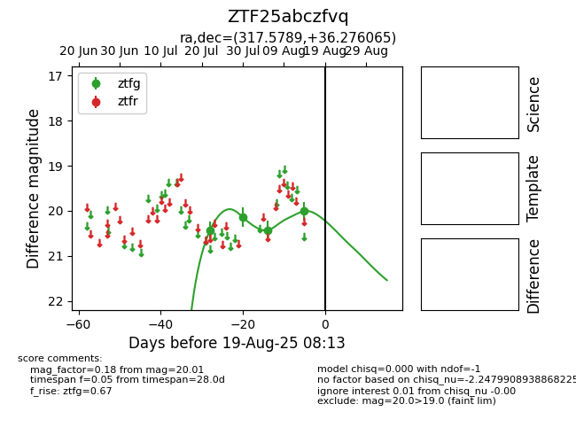

Target ZTF25abczfvq at 2025-08-19 08:13, see:
FINK: fink-portal.org/ZTF25abczfvq
Lasair: lasair-ztf.lsst.ac.uk/objects/ZTF25abczfvq
ALeRCE: alerce.online/object/ZTF25abczfvq
alt names
ZTF25abczfvq (ztf,fink)
coordinates:
equatorial (ra, dec) = (317.5789,+36.27606)
galactic (l, b) = (80.9329,-7.98164)
photometry
last ztfg=20.01
4 ztfg detections
